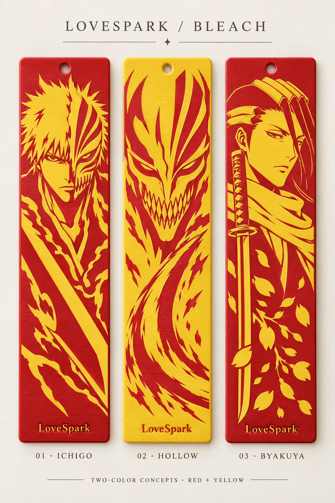

Project · fan art
Bookmarks
Three thin bookmarks of characters from Bleach, printed in red and yellow PLA. Small, quick and cheap: the easiest kind of project to start with.


In 3D
The published files, in 3D
These are the exact files on MakerWorld, split into their two colours. Pick a bookmark, then open it in 3D.
Loads the bookmark meshes and the 3D viewer (about 1.3 MB).
How they're made
Construction
A 1.28 mm base in one colour (eight 0.16 mm layers) with the artwork raised 0.32 mm on top in the second colour (two layers). One filament change, a 3 mm tassel hole and a small LoveSpark maker mark.
- Size
- 40.11 × 150.19 × 1.6 mm
- Printer
- Bambu Lab A1, 0.4 mm nozzle, 0.16 mm layers
- Colours
- Ichigo and Byakuya: red base, yellow art. Hollow: yellow base, red art.
Source: archive/bleach-bookmarks/README.md, archive/bleach-bookmarks/HOLLOW.md

Get the files
Download
The three Bambu Studio projects are free on MakerWorld for personal use. Downloads live there so the files have one home and one licence.